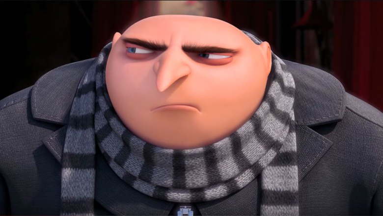
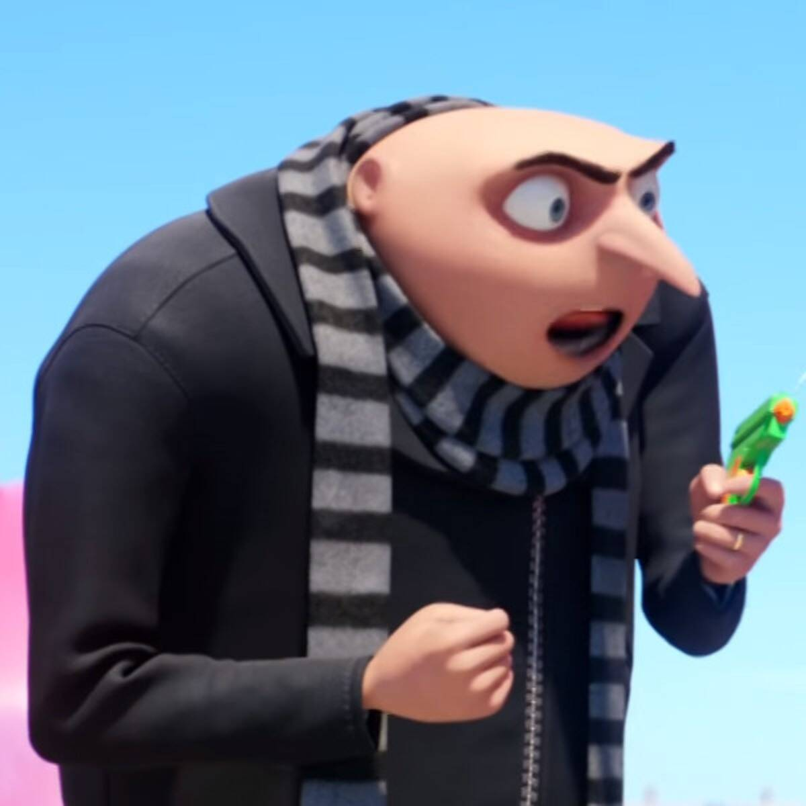
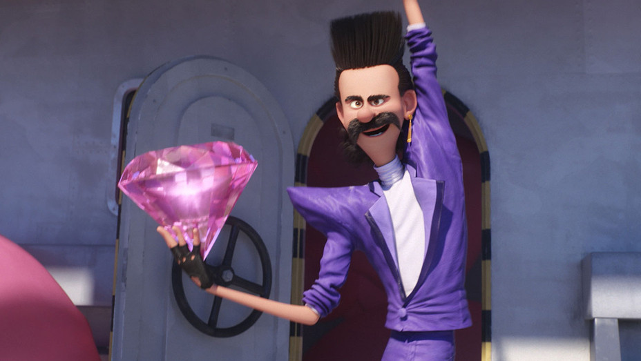
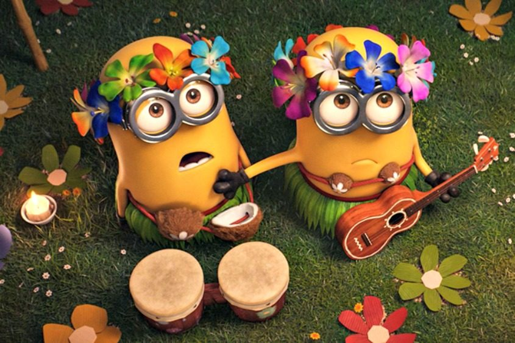
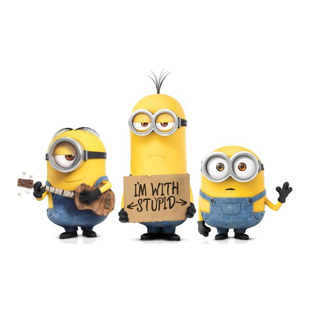

GRU IS A REALLY FUNNY GUY
me writting the review

Review of disney's despicale me movie
by me, the writer of this pager
here we can see gru (the mane character of the movie) playing with a water gun. This is a reference to a real fgun which he shouldve used when he went to fight the bad guyt but in steead he brought a water gun which wont hert anyone.
!! LITTLE KNOWN FACT ALERT !!
this movie actually have a reference to machel jackson in them
Dubbed the "King of Pop", he is regarded as one of the most significant cultural figures of the 20th century. Through stage and video performances, he popularized complicated dance moves such as the moonwalk, to which he gave the name, and the robot. His sound and style have influenced artists of various genres, and his contributions to music, dance, and fashion, along with his publicized personal life, made him a global figure in popular culture for over four decades. Jackson is the most awarded artist in the history of popular music.
this vilain in the spiderman movie... i mean dispecible me movei is a refercne to the pop culuter lagend michele jaxon
and finaly in my review i will be talking about the miniois and all theyre imapropriate jokes
the first image im going to talk about is this one
this is clearly an adult reference but i dont understand it so lets move on
this next joike is explainging the that one in the middle is with 2 other minions that he doesnt belive are smartered than him
the really fgunny thinkgs is in the movie they take a test and all get a 100 on it excpt for the minion in the middle so its very funn becasue he is the not smart one (i cant say stupid, my mom will get made at me)